Testes de Software¶
Matriz de casos de teste¶
| ID | Descrição | Data de Início | Data de Conclusão | Responsável | Resultados Esperados | Resultados Obtidos | Observações |
|---|---|---|---|---|---|---|---|
| 4.1 | Validação de mensagens de telemetria | 25/10/2026 | 25/10/2026 | Christopher | 100% das malformadas descartadas; serviço segue respondendo | 33 de 33 malformadas descartadas com 422 e nada gravado (35 de 35 testes aprovados) | Evidência na Figura 1 |
| 4.2 | Regras de tentativas e recusa | 26/10/2026 | 26/10/2026 | Amanda de Moura | T01–T13, E01–E08 e R01–R06; recusa sem mudar estado válido | Abertura em running 1/3, retomada, recusa e cancelamento na 3ª (45 de 45 testes aprovados) |
iniciada_em da execução sem asserção. Figura 2 |
| 4.3 | Encerramento manual e interrupção pendente | 25/10/2026 | 25/10/2026 | Christopher | failed com encerrado_operador e interromper na serial em até 1 s |
interromper com mediana de 98 ms e máx. de 195 ms (tel a 5 Hz); 5 de 5 aprovados |
Com tel a 1 Hz o tempo sobe (ver complemento). Figura 3 |
| 4.4 | Perda de link e estouro de 10 min | 26/10/2026 | 26/10/2026 | Amanda de Moura | link_lost até 1 s após 10 s sem sinal; time_exceeded até 1 s após 600 s; 9 s de silêncio não dispara |
Disparo dentro de 1 s nos dois limites; reconexão aos 9 s mantém running (17 de 17 testes aprovados) |
Entre tentativas, os 10 min não cancelam a execução. Figura 4 |
| 4.5 | Consumo, velocidade, tempo e comparação | 26/10/2026 | 26/10/2026 | Amanda de Moura | Consumo em mV e p.p.; velocidade por células de 18 cm; tempo pelo relógio do backend; variação contra o melhor tempo | 3 células = 0,54 m e 0,18 m/s em 3 s; 8400→7800 mV = 600 mV e 45 p.p. (22 de 22 testes aprovados) | Sem soma entre tentativas nem refino por ToF. Figura 5 |
| 4.6 | Persistência da execução e unicidade da tentativa | 26/10/2026 | 26/10/2026 | Amanda de Moura | Execução e tentativa relidas do banco; uma só tentativa aberta; tentativa_id único |
Gravação e releitura corretas; segunda tentativa aberta rejeitada pelo banco (10 de 10 testes aprovados) | Campos finais da falha sem teste nesta suíte. Figura 6 |
| 4.7 | Carga de 10 msg/s | 25/10/2026 | 25/10/2026 | Christopher | p95 abaixo de 100 ms por 60 s, sem atraso acumulado | 600 mensagens em 60 s, 0 erros; p95 de 27,3 ms; atraso acumulado de 4,0 ms | API e Postgres em Docker Compose. Evidência na Figura 7 |
| 4.8 | Stream SSE da execução em andamento | 26/10/2026 | 26/10/2026 | Amanda de Moura | Evento em até 1 s após o registro; quem entra no meio recebe o trajeto; Last-Event-ID sem duplicar |
Entrega em menos de 1 s; reenvio em ordem e sem duplicar (24 de 24 testes aprovados) | O stream não filtra pelo status da tentativa. Figura 8 |
| 4.9 | Acompanhamento em tempo real e health-check | 26/10/2026 | 26/10/2026 | Amanda de Moura | Telemetria na tela em até 2 s, com a unidade recebida; health-check em bloco separado; aviso após 5 s sem dados | Célula A3, 7810 mV e 210 mm/s em menos de 2 s; bloco Health-check visível (37 de 37 testes aprovados) | Pílula "Atualizado há X s" e o bloco no detalhe sem teste direto. Figura 16 |
| 4.10 | Labirinto e trajeto | 24/10/2026 | 24/10/2026 | João Marcos | Trajeto e célula de falha iguais ao roteiro simulado | Células, paredes e falha iguais aos 3 roteiros do simulador (9 de 9 testes aprovados) | Execução manual na dev (ver complemento). Figuras 17 a 21 |
| 4.11 | Histórico, filtro e detalhe (Front↔Back) | 24/10/2026 | 24/10/2026 | João Marcos | Lista, filtro e detalhe conferidos contra o banco | Lista, filtros e detalhe iguais à API (34 de 34 testes aprovados) | Melhoria sugerida no complemento. Figuras 22 a 24 |
| 4.12 | Navegação em simulação | 25/10/2026 | 25/10/2026 | Christopher | 20 ou mais labirintos 4x4/8x4/12x4 resolvidos, 0 sucessos falsos | 24 de 24 labirintos em sucesso, 0 sucesso_falso (6 de 6 testes aprovados) |
US40 só na navegação (ver complemento). Figura 10 |
| 4.13 | Detecção de paredes com HAL simulada | 23/10/2026 | 23/10/2026 | Luiza | 50 de 50 casos simulados corretos (presente, ausente e com ruído) | 53 de 53 casos corretos, 45 sintéticos e 8 de ponta a ponta (20 de 20 testes aprovados) | Evidência na Figura 11 |
| 4.14 | Motores, encoders e PID com modelo simulado | 23/10/2026 | 23/10/2026 | Luiza | Erro de velocidade de até 5%; stuck detectado |
Velocidade a até 5% da referência; stuck em 1000 ms (11 de 11 testes aprovados) |
Na branch do PR #238 (integrado em 26/10). Figura 12 |
| 4.15 | Bateria com tensões simuladas | 23/10/2026 | 23/10/2026 | Luiza | Conversão para % e low_battery corretos nas duas fontes |
Percentual, alerta e low_battery corretos nas 2 fontes (13 de 13 testes aprovados) |
Evidência na Figura 13 |
| 4.16 | Telemetria pela serial até a API (via ponte) | 25/10/2026 | 26/10/2026 | Christopher | 10 min sem perda; downlink só com os 3 comandos do contrato v1 | 3.852 linhas recebidas e 3.852 respostas 200; 0 falhas; nenhum comando no downlink | Dados simulados (ver complemento). Figura 9 |
Rastreabilidade dos casos¶
Histórias de usuário (US), casos de uso (UC) e requisitos de cada caso.
| ID | Histórias de usuário | Casos de uso | Requisitos |
|---|---|---|---|
| 4.1 | US10 | UC06 | RF08, RNF-B09 |
| 4.2 | US07, US12, US18, US19, US20, US21, US30, US31 | UC01, UC02, UC03, UC09, UC20, UC31 | RF10, RF16, RF17, RF18, RF19, RF29, RF38 |
| 4.3 | US17, US22, US32 | UC04, UC05, UC10, UC30 | RF15, RF30, RF39 |
| 4.4 | US23, US24 | UC12.1, UC12.2 | RF31, RF32, RNF-B08 |
| 4.5 | US13, US14, US15, US16 | UC08, UC19 | RF11, RF12, RF13, RF14 |
| 4.6 | US19, US25 | UC05 | RF17, RF33 |
| 4.7 | US10, US11 | UC06, UC07 | RF08, RF09, RNF-B11 |
| 4.8 | US08 | UC13 | RF06, RNF-B04 |
| 4.9 | US01, US04, US05 | UC13, UC18 | RF01, RF04, RF05, RNF-B01, RNF-B02 |
| 4.10 | US06, US11, US17, US29 | UC07, UC11, UC17 | RF09, RF15, RF37 |
| 4.11 | US02, US03, US09, US16, US26, US27, US28 | UC14, UC15, UC16, UC19 | RF02, RF03, RF07, RF14, RF34–RF36 |
| 4.12 | US39, US40, US41 | UC21, UC23, UC25, UC26 | RF26, RF27, RF28 |
| 4.13 | US33 | UC24 | RF20 |
| 4.14 | US34, US35, US45 | UC23, UC28 | RF21, RF22 |
| 4.15 | US36 | UC29 | RF23 |
| 4.16 | US10, US32, US37 | UC06, UC27, UC30 | RF24, RNF-B06, RNF-B07 |
Complemento dos resultados obtidos¶
Detalhes dos resultados que não aparecem na tabela nem nas seções de evidências.
- 4.3: com a
tela 1 Hz (robô parado), a mediana foi de 537 ms e o máximo de 1157 ms: o comando sai na resposta à próximatel, então o tempo depende do período dela. Nas rotasencerrar-tentativaeencerrar, ointerromperse repetiu a cadatelaté afalhacom origemwebdo robô e parou depois dela. - 4.7: latência com p50 de 21,5 ms e máxima de 58,0 ms; p95 de 28,5 ms na janela inicial (10 s) e de 26,9 ms na final.
- 4.10: execução manual na
devem 1428f2b, antes do PR #239; com adevatual o simulador não roda mais pela tela (#249). - 4.11: melhoria sugerida: mostrar um número curto no lugar do UUID da execução (#248).
- 4.12: o tipo do labirinto que o robô leria no DIP switch (US40) é passado direto à navegação; a leitura das vias na placa fica para o robô montado.
- 4.16: o downlink esperado são os comandos do contrato v1 (
interromper,largarehealth_check); o esperado foi atualizado porque o contrato passou a terlargarehealth_check. Os dados são simulados: o simulador de telemetria em porta serial virtual faz o papel da ESP32 pela USB, e o firmware real fica para a #217 e o FIRM-11. 3.853 linhas enviadas pelo simulador e 3.852 recebidas pela ponte (a primeira é descartada ao abrir a porta), com conteúdo e ordem idênticos. Com a tentativa aberta (600 s, encerrada portime_exceeded), 2.926tele 731passorecebidos e todos gravados, além dos 8 itens do health-check; 1telna fronteira de 50 ms ficou fora da contagem.
Histórias de usuário e protótipos¶
As 45 histórias de usuário (US) do backlog do software e a tela do protótipo de cada uma. O protótipo tem as mesmas 12 telas para os labirintos 4x4, 8x4 e 12x4, numeradas assim: 1 Início, 2 Health-check, 3 Em execução, 4 Concluída, 5 Execução recusada, 6 Sem comunicação, 7 Encerrar execução, 8 Encerrada como falha, 9 Retomar tentativa, 10 Retomada (tentativa 2), 11 Concluída após retomada e 12 Falha sem retomada.
A situação vem da leitura do código da dev em 26/10/2026, comparando cada critério de aceitação do backlog com o que existe e com o que os testes afirmam. A coluna Observação traz o caso da matriz que verifica a história e, quando houver, o que falta no código ou nos testes. O roteiro de integração (7.5) verificará as histórias que dependem do robô montado:
- Implementada: o critério existe no código e é exercitado por teste automatizado.
- Simulada: no firmware, a lógica existe e é testada no PC com a HAL simulada; o driver real e a validação no robô montado ficam para FIRM-10 e FIRM-11.
- Parcial: parte do critério não existe no código; o que falta está na coluna Observação.
- Pendente: não implementada.
"—" indica história sem interface (back-end e firmware). "Sem tela" indica história com interface implementada no front, mas sem tela no protótipo (histórico e detalhe das execuções).
| US | História | Tela do protótipo | Situação | Observação |
|---|---|---|---|---|
| US01 | Acompanhar a telemetria durante e após a execução | 3, 4 | Implementada | Caso 4.9 |
| US02 | Ver os dados de uma execução finalizada | 4, 8, 11, 12 | Implementada | Caso 4.11 |
| US03 | Consultar o histórico de execuções | Sem tela | Implementada | Caso 4.11 |
| US04 | Ver a execução em andamento e o tempo desde a última atualização | 3, 6 | Implementada | Caso 4.9; pílula "Atualizado há X s" sem teste direto |
| US05 | Ver o health-check em área separada | 2 | Implementada | Caso 4.9; bloco no detalhe da execução sem teste |
| US06 | Ver o trajeto sobre o labirinto | 3, 4, 8 | Implementada | Caso 4.10 |
| US07 | Ver a tentativa (n/3) e retomar após falha | 3, 9, 10, 12 | Implementada | Caso 4.2 |
| US08 | Disponibilizar os dados da execução em andamento | 3 | Implementada | Caso 4.8; o stream não filtra pelo status da tentativa |
| US09 | Disponibilizar os dados das execuções anteriores | Sem tela | Implementada | Caso 4.11 |
| US10 | Receber a telemetria do Micromouse | — | Implementada | Caso 4.1, 4.7, 4.16 |
| US11 | Registrar a sequência de células visitadas | 4 | Implementada | Caso 4.7, 4.10 |
| US12 | Iniciar nova execução informando o labirinto | 1 | Implementada | Caso 4.2; iniciada_em sem teste |
| US13 | Calcular o consumo de bateria | 3, 4 | Implementada | Caso 4.5 |
| US14 | Calcular a velocidade média | 3, 4 | Implementada | Caso 4.5; sem refino por ToF e encoders |
| US15 | Calcular o tempo da tentativa e da execução (limite de 10 min) | 3, 11 | Implementada | Caso 4.5; soma entre tentativas sem teste |
| US16 | Comparar o tempo com o melhor já registrado | 4 | Implementada | Caso 4.5, 4.11 |
| US17 | Registrar a célula e o motivo da falha | 8, 12 | Implementada | Caso 4.3, 4.10; observacao sem teste de persistência |
| US18 | Registrar o status de tentativas e execuções | 3, 4, 8 | Implementada | Caso 4.2 |
| US19 | Identificar cada tentativa de forma única | — | Implementada | Caso 4.2, 4.6; unicidade só pela chave primária |
| US20 | Recusar nova tentativa com outra aberta | 5 | Implementada | Caso 4.2 |
| US21 | Avisar quando uma execução é recusada | 5 | Implementada | Caso 4.2 |
| US22 | Encerrar manualmente a tentativa | 7, 8 | Implementada | Caso 4.3 |
| US23 | Detectar perda de comunicação | 6 | Implementada | Caso 4.4 |
| US24 | Encerrar a execução aos 10 minutos | 3 | Parcial | Caso 4.4; não cancela aos 10 min entre tentativas |
| US25 | Gravar os dados finais no banco | — | Implementada | Caso 4.6; campos finais das falhas sem teste |
| US26 | Consultar as execuções de um labirinto | Sem tela | Implementada | Caso 4.11 |
| US27 | Consultar as execuções de todos os labirintos | Sem tela | Implementada | Caso 4.11 |
| US28 | Consultar todos os dados de uma execução | Sem tela | Implementada | Caso 4.11 |
| US29 | Armazenar as paredes detectadas | 3, 4 | Implementada | Caso 4.10 |
| US30 | Retomar após falha de componente | 9, 10 | Implementada | Caso 4.2 |
| US31 | Retomar após falha de trajeto ou encerramento manual | 9, 10, 11 | Implementada | Caso 4.2 |
| US32 | Enviar ao robô os comandos do contrato | 7 | Implementada | Caso 4.3, 4.16; só interromper testado até a serial |
| US33 | Detectar paredes com os sensores ToF | — | Simulada | Caso 4.13 |
| US34 | Controlar avanço, curva e parada | — | Parcial | Caso 4.14; a aplicação não aciona as rodas (FIRM-05) |
| US35 | Calcular a velocidade a partir dos encoders | — | Parcial | Caso 4.14; velocidade não chega à telemetria (fixa em 0) |
| US36 | Monitorar nível e consumo da bateria | — | Simulada | Caso 4.15 |
| US37 | Transmitir a telemetria ao sistema web | — | Parcial | Caso 4.16; Bluetooth real inexistente; sai pela serial USB |
| US38 | Sinalizar o estado por LED e buzzer | — | Parcial | Roteiro 7.5; LED só pisca; buzzer não é usado |
| US39 | Detectar a chegada ao objetivo | — | Simulada | Caso 4.12 |
| US40 | Selecionar o labirinto no DIP switch | — | Pendente | Roteiro 7.5; tipo fixo em 4x4 (ROBO_TIPO_LABIRINTO) |
| US41 | Registrar a posição e o trajeto | — | Parcial | Caso 4.12; sem lista ordenada no firmware; trajeto vem dos passo |
| US42 | Fazer o health-check antes da execução | — | Parcial | Roteiro 7.5; verifica bateria e ToF; motores e encoders sem teste |
| US43 | Parar e apagar a memória pelo botão BOOT | — | Pendente | Roteiro 7.5; o botão não é lido pela aplicação |
| US44 | Gravar mapa e estado em memória não volátil | — | Simulada | Roteiro 7.5; driver NVS real sem teste |
| US45 | Detectar travamento automaticamente | — | Parcial | Caso 4.14; a aplicação não usa vel_travado(); stuck é sem saída |
Evidências dos testes do back-end¶
Os casos 4.1 a 4.8 e o 4.16 rodam com o pytest em src/backend, contra a API e o Postgres de teste (ver o README do back-end). O 4.9 roda com o Vitest no front.
4.1 Validação de mensagens de telemetria¶
O arquivo tests/integracao/test_mensagens_malformadas.py envia 33 mensagens malformadas, uma por regra do contrato, e confere que cada uma volta com 422 sem gravar nada. Um teste extra manda uma rajada intercalada de válidas e malformadas e confere que o serviço segue respondendo. Resultado: 35 de 35 aprovados.
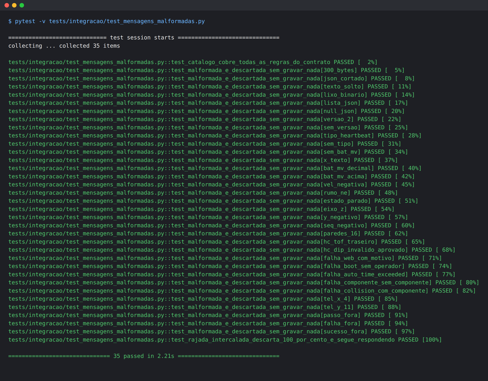
Figura 1: Execução da suíte test_mensagens_malformadas (4.1)
4.2 Regras de tentativas e recusa¶
O arquivo tests/integracao/test_transicoes_execucao.py cobre a tabela de transições do BACK-03 (T01–T13, E01–E08 e R01–R06). Nova execução abre a tentativa 1 já em running e manda largar. Retomar depois de falha de trajeto abre a tentativa 2. Health-check reprovado, expirado (acima de 7 min) ou com o tipo do DIP diferente recusa a abertura. A terceira falha, o estouro de tempo e uma nova execução cancelam a execução anterior. Retomar com tentativa aberta, com a execução já encerrada ou com as três tentativas usadas devolve recusa sem mudar o estado válido. Resultado: 45 de 45 aprovados. A suíte não afirma o campo iniciada_em da execução.
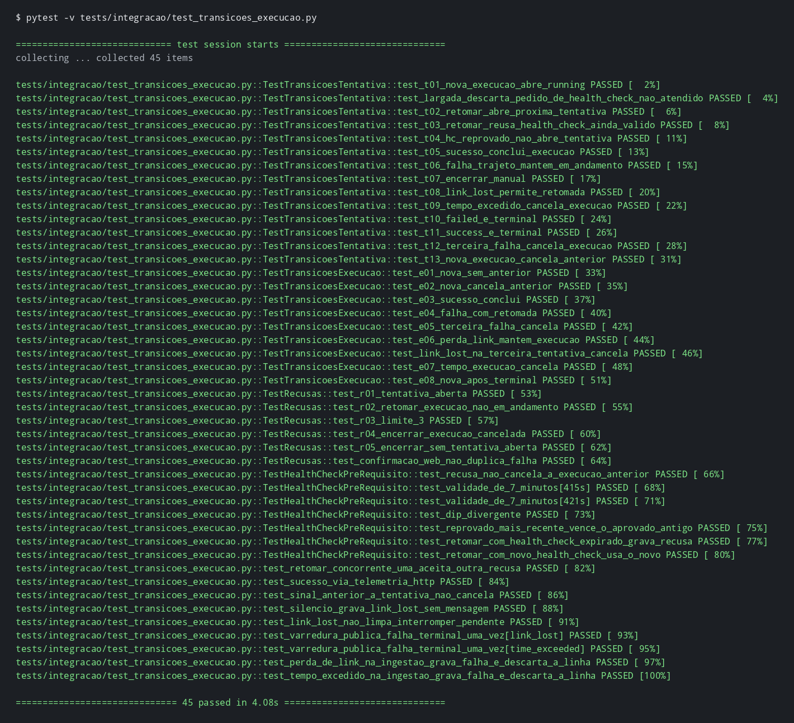
Figura 2: Execução da suíte test_transicoes_execucao (4.2)
4.3 Encerramento manual e interrupção pendente¶
O arquivo tests/integracao/test_encerramento_ate_a_serial.py encerra a tentativa pela API e mede o tempo até o interromper ser escrito na serial. Com a tel a 5 Hz, a mediana foi de 98 ms e o máximo de 195 ms em 20 encerramentos. Com a tel a 1 Hz, a mediana foi de 537 ms e o máximo de 1157 ms, porque o comando sai na resposta à próxima tel. Resultado: 5 de 5 aprovados.
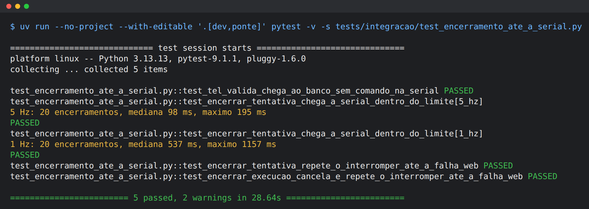
Figura 3: Execução do teste test_encerramento_ate_a_serial (4.3)
4.4 Perda de link e estouro de 10 min¶
Os arquivos tests/integracao/test_monitores_relogio.py e tests/unit/test_monitor_conexao.py avançam um relógio falso, sem esperar 10 s nem 10 min de verdade. O link_lost sai até 1 s depois dos 10 s sem sinal, e a execução da tentativa 1 segue em_andamento. Com o robô falando o tempo todo, o time_exceeded sai até 1 s depois dos 600 s e a execução vai a cancelada. Três silêncios de 9 s, cada um seguido de uma mensagem, não disparam. Mensagem anterior à tentativa não conta, e a tentativa aberta antes do boot da API tem uma janela para reconectar. Resultado: 17 de 17 aprovados.
O limite de 10 min é conferido com a tentativa aberta. No intervalo entre uma falha e a retomada, sem tentativa running, o relógio da execução não cancela aos 10 min (US24).
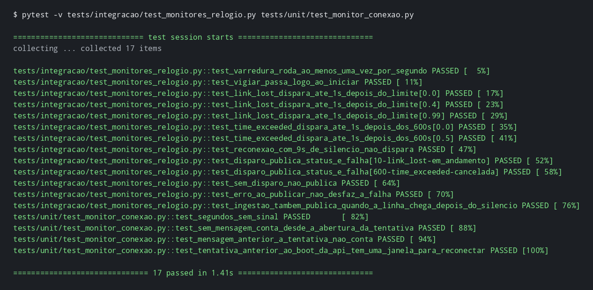
Figura 4: Execução das suítes de link e de tempo (4.4)
4.5 Consumo, velocidade, tempo e comparação¶
A suíte unitária tests/unit/test_calculo_metricas.py e a de integração tests/integracao/test_metricas_telemetria.py conferem o cálculo (BACK-04):
- Distância e velocidade: 3 células valem 0,54 m; em 3 s a média é 0,18 m/s. Revisita conta e a largada não: o percurso com uma volta, em 20 s, dá 0,027 m/s.
- Consumo: de 8400 mV para 7800 mV são 600 mV e 45 p.p. na curva da LiPo; de 6400 mV para 5600 mV são 50 p.p. na curva das pilhas AA. O consumo parcial atualiza a cada
tel. - Tempo: conta da largada, não do health-check, e usa o relógio do backend mesmo com a ponte duas horas defasada. No sucesso, a tentativa e a execução fecham com 30 s.
- Comparação: 30 s contra um melhor de 40 s dá −25%. Sem histórico, ou com melhor zero ou negativo, a variação fica vazia.
Resultado: 22 de 22 aprovados. A velocidade usa o tamanho da célula, sem refino pela posição dentro dela (ToF e encoders). O tempo total conferido é o de uma tentativa; a soma entre tentativas, intervalos incluídos, não entra nesta suíte.
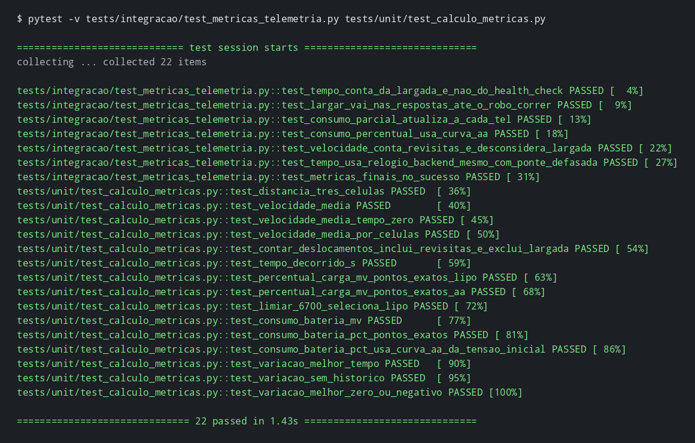
Figura 5: Execução das suítes de cálculo de métricas (4.5)
4.6 Persistência da execução e unicidade da tentativa¶
O arquivo tests/integracao/test_repositorio.py grava a execução e a tentativa e as relê do Postgres. A tentativa volta com o mesmo tentativa_id. As tentativas saem ordenadas pelo attempt_index. Duas tentativas running na mesma execução quebram a restrição do banco; depois de a anterior fechar, a próxima aberta é aceita. O melhor tempo de cada labirinto ignora failed e, sem success, volta vazio. Resultado: 10 de 10 aprovados.
A unicidade conferida é a da chave primária. Célula, motivo e observação da falha não são afirmados nesta suíte.
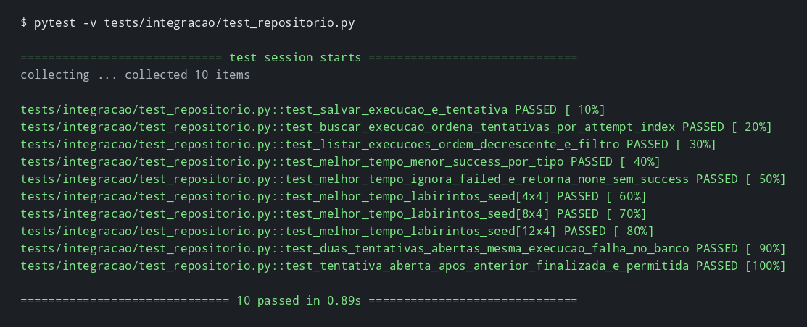
Figura 6: Execução da suíte test_repositorio (4.6)
4.7 Carga de 10 msg/s¶
O arquivo tests/integracao/test_carga_telemetria.py e o script de carga mandam 600 mensagens em 60 s (300 tel e 300 passo) e medem a latência de cada resposta. O p95 total foi de 27,3 ms, abaixo do limite de 100 ms, e o p95 por janela de 10 s ficou estável ao longo do ensaio.
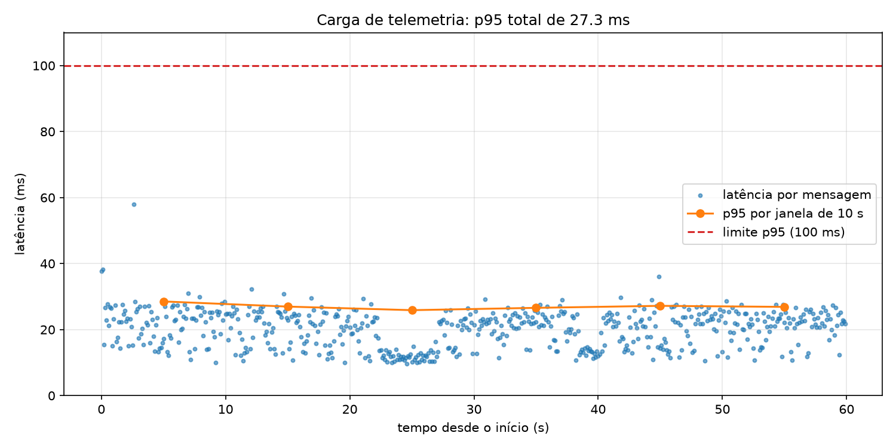
Figura 7: Latência da carga de telemetria, com p95 por janela de 10 s (4.7)
4.8 Stream SSE da execução em andamento¶
Os arquivos tests/integracao/test_stream_sse.py e tests/integracao/test_contrato_stream.py abrem o fluxo da execução:
- Quem entra no meio recebe o trajeto inteiro, em ordem e sem passo repetido.
Last-Event-IDreenvia só os seguintes; valor inválido reenvia tudo. - O trajeto atravessa as tentativas da mesma execução. Execução encerrada reenvia o trajeto e fecha o fluxo.
- Do registro no banco até o evento sair, a entrega fica abaixo de 1 s (fatia do backend no RNF-B04). Falha ao publicar não desfaz a gravação.
link_loste o encerramento manual publicam a falha retomável depois do commit. Encerrar a execução publica a falha que fecha o stream.- Os frames seguem o contrato: só o
passotraz o id da linha, e a telemetria publicada leva mV, porcentagem e rumo.
Resultado: 24 de 24 aprovados. O evento sai para a execução esteja a tentativa running ou já encerrada: o stream não filtra pelo status da tentativa.
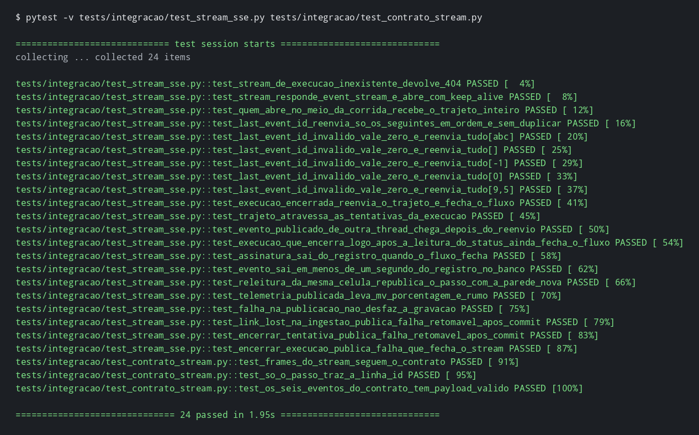
Figura 8: Execução das suítes do stream SSE (4.8)
4.16 Telemetria pela serial até a API¶
O ensaio de 631,8 s passa o simulador de telemetria por uma porta serial virtual, a ponte e a API. O gráfico compara, em janelas de 10 s, as mensagens enviadas pelo simulador, recebidas pela ponte (RX) e gravadas no banco. A curva das gravadas cai antes das outras no fim porque a tentativa foi encerrada por time_exceeded aos 600 s.
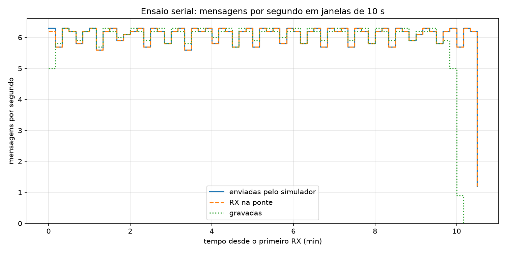
Figura 9: Ensaio serial, com as mensagens por segundo enviadas, recebidas e gravadas (4.16)
Evidências dos testes de firmware¶
Os testes 4.12 a 4.15 rodam no PC com o Unity pelo PlatformIO. Os de 4.13 a 4.15 usam a HAL simulada no lugar dos sensores e dos motores (-D HAL_SIMULADA) e o mundo simulado (lib/simulacao/sim_mundo.c), enquanto o 4.12 usa o simulador de corrida (lib/simulador/sim_corrida.c), que lê o labirinto de um arquivo, entrega à navegação as paredes da célula em que o robô está e executa a ação que ela devolve. O mundo simulado faz o papel do robô: posição, paredes do labirinto, leituras dos ToF com ruído de semente fixa, motores com atraso de primeira ordem e encoders. Os erros de leitura do 4.12 também usam semente fixa. Assim os resultados se repetem a cada execução. Os comandos rodam dentro de src/firmware (ver o README do firmware).
4.12 Navegação em simulação¶
A suíte test_navegacao_labirintos roda a navegação de verdade (nav_passo, FIRM-02) nos labirintos de simulador-navegacao/labirintos: 4 de 4x4, 4 de 8x4 e 4 de 12x4, cada um nas versões -dir e -esq (espelhadas), num total de 24. Cada corrida termina em um destes resultados: sucesso (declarou sucesso na célula de objetivo), sucesso_falso (declarou sucesso fora dela), sem_caminho, colisao ou limite (passou do limite de passos).
- Sucesso em todos os labirintos (
test_todos_os_labirintos_terminam_em_sucesso): sem erros de leitura, as 24 corridas precisam darsucesso. Resultado: 24 em sucesso e 0sucesso_falso, acima dos 20 pedidos. - Chegada ao objetivo e trajeto (
test_trajeto_vai_da_largada_ao_objetivo_por_celulas_vizinhas, US39 e US41): a lista de células anotada a cada passo começa na largada (0, 0), cada célula é vizinha da anterior, a quantidade de células distintas bate com o relatório da corrida e a última é o canto oposto, onde o robô declarou o sucesso. - Versões espelhadas (
test_versoes_espelhadas_dao_o_mesmo_trajeto): no referencial do robô, as versões-dire-esqde cada labirinto dão o mesmo trajeto. - Leituras erradas: cada labirinto corre com as sementes 1 a 50 (1200 corridas), conferindo a parede da frente com 3 amostras. Com 1% de leituras erradas, 1200 de 1200 dão sucesso (meta de 100%); com 5%, 1197 de 1200 (99,75%, meta de 95%). Nenhuma corrida termina em
limiteousucesso_falso. - Retomada (
test_estado_copiado_no_meio_da_corrida_da_o_mesmo_trajeto, FIRM-08): copiar o estado da navegação em qualquer passo da corrida e seguir com a cópia dá o mesmo trajeto e o mesmo resultado.
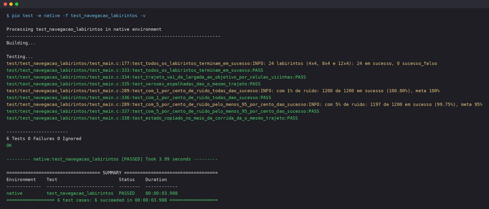
Figura 10: Execução da suíte test_navegacao_labirintos (4.12)
4.13 Detecção de paredes com HAL simulada¶
A suíte test_sensores confere o filtro dos ToF e a decisão de parede (FIRM-03):
- 45 casos sintéticos (
test_45_casos_sinteticos): sequências de leituras de um sensor (frente, esquerda ou direita) com parede presente, ausente, com ruído de ±15 mm e oscilando na faixa da histerese. Para cada caso, o teste confere se a decisão final é a esperada. - 8 casos de ponta a ponta no mundo simulado: paredes da largada, célula aberta dos lados com ruído, paredes estáveis com ruído, pico isolado que não pode virar parede, parede da frente ao chegar no fim do corredor e as três situações da leitura lateral (no centro da célula, ao entrar nela e tarde demais).
- Os demais testes cobrem a mediana, a tolerância a falhas de leitura, a taxa de 20 Hz dos três sensores, o autoteste da largada e a sequência do XSHUT.
Resultado: 53 de 53 casos corretos, acima dos 50 pedidos.
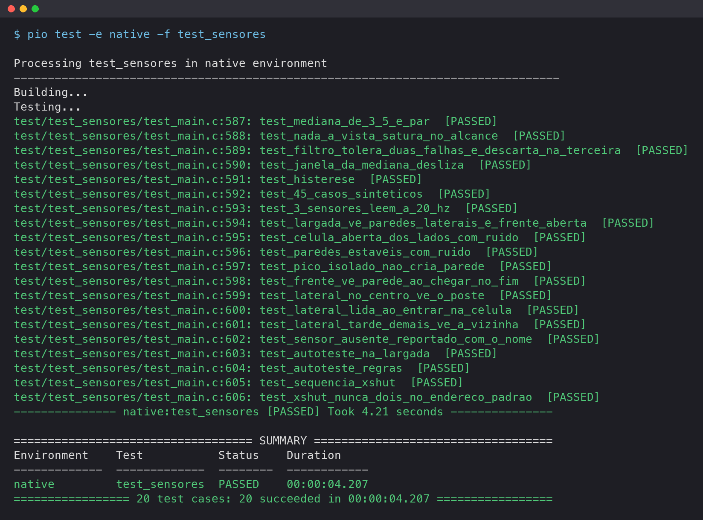
Figura 11: Execução da suíte test_sensores (4.13)
4.14 Motores, encoders e PID com modelo simulado¶
A suíte test_velocidade (FIRM-04) testa o PID de velocidade por roda, que roda a 200 Hz, contra o motor simulado:
- Convergência: com referências de 400 mm/s, 200 mm/s e −300 mm/s (ré), a malha roda 500 ms e depois a velocidade medida pelos encoders em 200 ms precisa ficar a até 5% da referência nas duas rodas.
- Stuck: com o encoder travado (
sim_travar_encoder) e PWM ativo, a falha precisa sair em exatamenteMOTOR_TRAVADO_MS(1000 ms), com as duas rodas ou só uma travada. Antes disso, nada pode ser marcado; depois, a ponte H fica desligada, mesmo após o reset. - Segurança: motores parados e ponte H em standby no boot e no reset, malha agindo só a cada 5 ms, sem
stuckfalso com a roda girando ou com referência zero.
O limite de PWM pela tensão da bateria (6 V no motor) é conferido à parte, na suíte test_ponte_h.
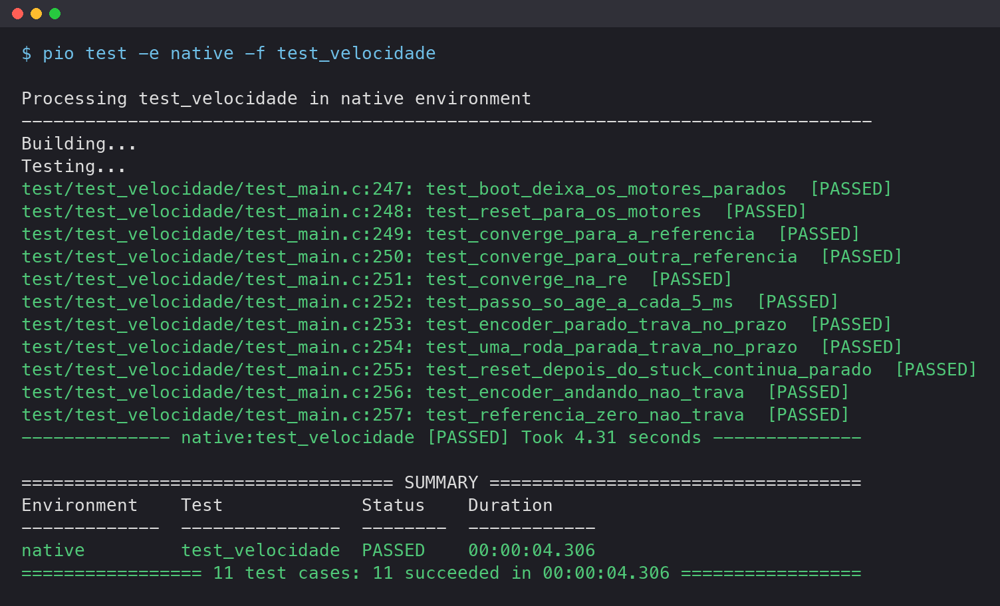
Figura 12: Execução da suíte test_velocidade (4.14)
4.15 Bateria com tensões simuladas¶
A suíte test_bateria (FIRM-06) passa tensões simuladas pela mesma conversão usada na placa:
- LiPo 2S: 8,4 V dá 100% e nível normal; 7,4 V dá alerta; 7,01 V ainda é alerta; 6,9 V é
low_battery. Uma LiPo que cai abaixo do limiar das pilhas continua sendo tratada como LiPo. - Pilhas AA: 6,0 V dá 80% e nível normal; 5,2 V continua normal; abaixo de 5,0 V é
low_battery. - Limites exatos de alerta e corte nas duas fontes, interpolação do percentual pela curva de descarga, média móvel de 16 leituras e tensão na ponte H sem a queda do diodo.
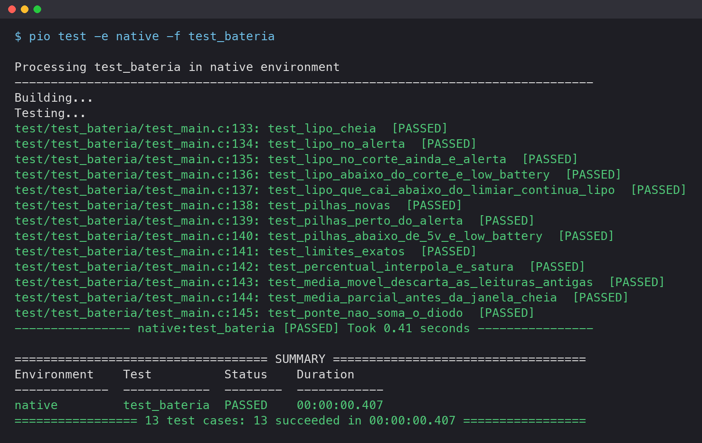
Figura 13: Execução da suíte test_bateria (4.15)
Testes unitários e de integração do firmware¶
Toda a suíte do firmware roda no ambiente native_cov, que compila os mesmos testes do native com --coverage. A cobertura é medida com o gcovr. Dos arquivos medidos, ficam de fora só os drivers reais da ESP32 (lib/hal/esp32/hal_*), que só compilam na placa e serão testados com o robô montado (FIRM-10). Os testes de integração são os que juntam módulos pelo mundo simulado: navegação completa em labirintos 4x4, 8x4 e 12x4 (test_navegacao_labirintos), simulador de corrida (test_simulador), sensores de ponta a ponta (test_sensores) e HAL simulada (test_hal_sim).
Resultado na dev (26/10/2026): 245 de 245 testes aprovados e 95,4% das linhas cobertas (95,7% das funções e 87,1% dos desvios), acima da meta de 80%. A suíte já inclui os PRs do FIRM-04 (#238, integrado em 26/10) e do FIRM-08 (#239, integrado em 24/10).
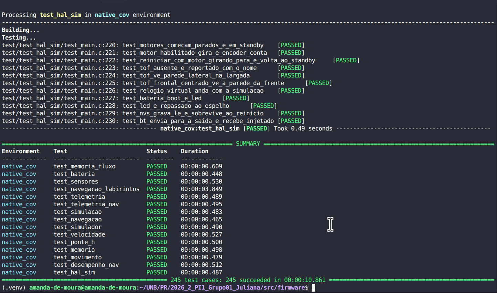
Figura 14: Resumo da suíte de testes do firmware (pio test -e native_cov)
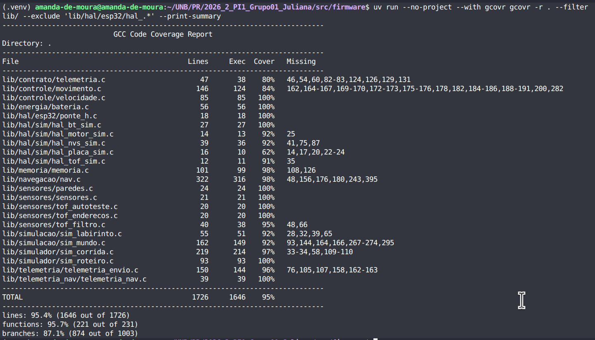
Figura 15: Cobertura do firmware por arquivo (gcovr)
Evidências dos testes do front-end¶
O caso 4.9 roda na suíte do Vitest, com o MSW no lugar da API. Os testes 4.10 e 4.11 foram feitos de dois jeitos. No primeiro, a cadeia real: o simulador de telemetria manda os roteiros por HTTP para a API (docker compose em src/backend, com banco vazio), e o front roda sem mock (VITE_API_MOCK=false npm run dev). Cada tela foi comparada com a resposta da API para a mesma execução. Essa parte rodou em 24/10/2026 sobre a dev no commit 1428f2b. No segundo, a suíte do Vitest repete as mesmas conferências sem backend, para rodar em toda mudança.
Duas regras da API mudam o jeito de rodar à mão: a execução só abre com um health-check válido (7 min), e a tentativa cai por link_lost depois de 10 s sem sinal do robô. Por isso o simulador precisa começar logo depois de Nova execução, e a retomada, logo depois da falha. No roteiro de colisão, a pausa entre as tentativas foi aumentada de 5 s para 9 s para dar tempo de retomar.
Depois disso, o PR #239 fez a API encerrar a tentativa aberta quando chega o health-check de um boot novo do robô. O simulador começa a correr logo depois do health-check, sem esperar o largar, então com a dev atual a tentativa aberta pela tela cai antes de receber os passos (#249). A parte automática não depende disso e continua passando.
4.9 Acompanhamento em tempo real e health-check¶
O arquivo src/testes/front03.test.tsx acompanha a execução pelo SSE (FRONT-03):
- A telemetria nomeada aparece em menos de 2 s: célula A3, 7810 mV e 210 mm/s, sem converter a unidade nem arredondar o valor (RNF-B01, RNF-B02).
- O health-check chega num bloco com título próprio e continua visível com a tentativa em
running. Resultado parcial ou reprovado não é mostrado como aprovado. - Depois de 5 s sem dados a tela avisa que está sem dados do robô e tira o aviso quando chega uma amostra nova.
- No sucesso, a tela reconsulta os dados finais e mantém a última célula, a bateria e a velocidade. Uma execução já encerrada, aberta pela URL, também restaura célula, bateria e health-check.
Resultado: 37 de 37 aprovados. A pílula "Atualizado há X s" não tem teste direto: o que a suíte cobre é o aviso aos 5 s. O bloco de health-check na página de detalhe, fora do ao vivo, também não entra aqui.
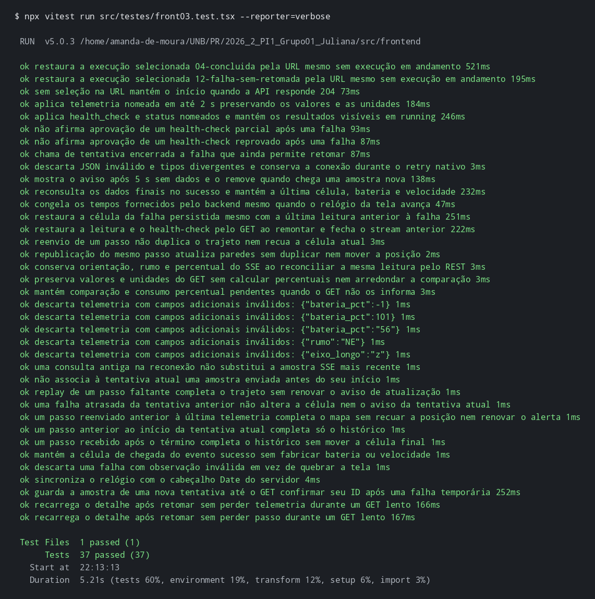
Figura 16: Execução da suíte de acompanhamento em tempo real (4.9)
4.10 Labirinto e trajeto¶
Foram usados os três roteiros 4x4 do simulador:
sucesso-4x4: A1 → A2 → A3 → A4 → B4 → C4 → C3, terminando em sucesso. A tela desenha uma linha só, com o robô em C3, as paredes de cada célula iguais às do roteiro e nenhuma célula de falha (Figura 17).colisao-retomada: a T1 bate em B4, que fica vermelha comFALHA T1, e o cartão da falha mostra B4, "Colisão com parede" e "Detectada automaticamente". Depois da retomada, a T2 chega a C3. Os filtros T1 e T2 separam as duas tentativas (Figuras 18 e 19).falha-componente: a T1 para em A4 com o motor direito em falha. A célula fica vermelha, o robô aparece em vermelho ("· falhou") e o cartão mostra "Falha de componente · Componente: Motor direito" (Figura 20).
O teste automático src/testes/caso410Trajeto.test.tsx lê os mesmos três arquivos de src/simulador-telemetria/roteiros, monta a resposta da API do jeito que o backend grava e confere, para cada roteiro, a ordem das células na linha do trajeto, os lados com parede em cada célula, o destaque da falha e o cartão. Se alguém mudar um roteiro ou o desenho do labirinto, o teste acusa (Figura 21).
Na execução manual, o roteiro colisao-retomada ainda fazia a T2 começar de novo em A1, mas a US31 e o ADR-012 dizem que a retomada parte da célula da falha. A tela já seguia a regra: marca RETOMADA em B4, enquanto a linha da T2 sai de A1 (Figura 19). O PR #239 corrigiu o roteiro, e a T2 agora recomeça em B4. Como o teste automático lê o roteiro, ele já confere a versão nova.
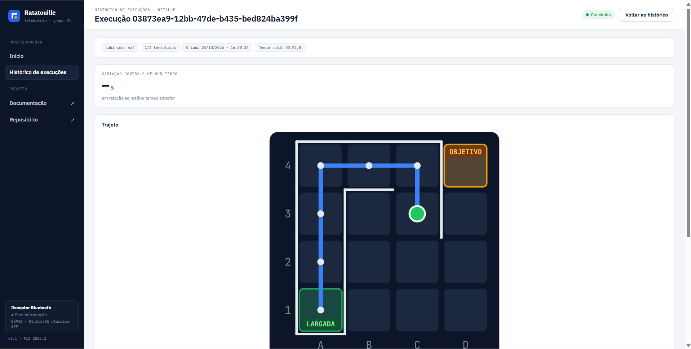
Figura 17: Detalhe da execução do roteiro sucesso-4x4 (4.10)
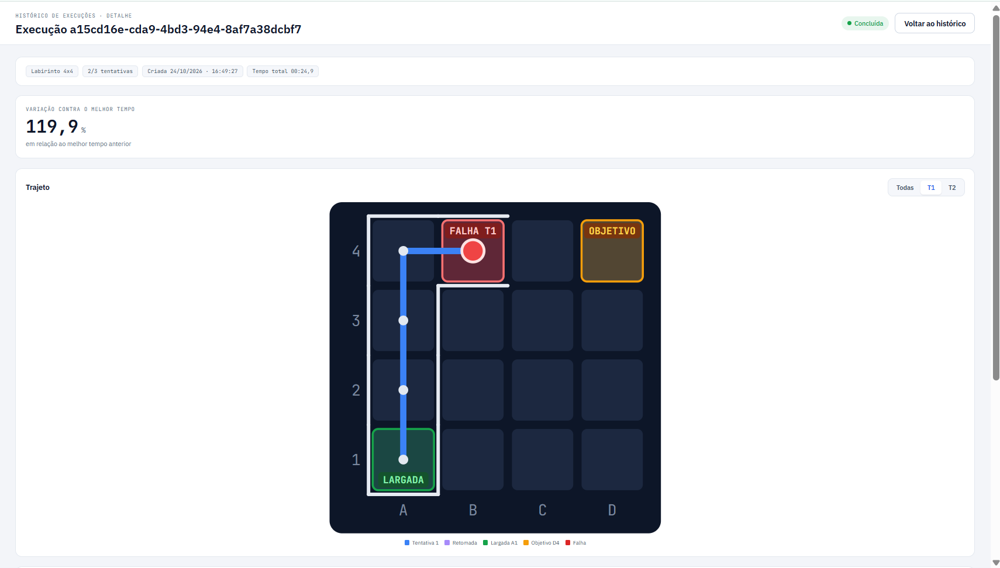
Figura 18: Colisão em B4 na tentativa 1, filtro T1 (4.10)
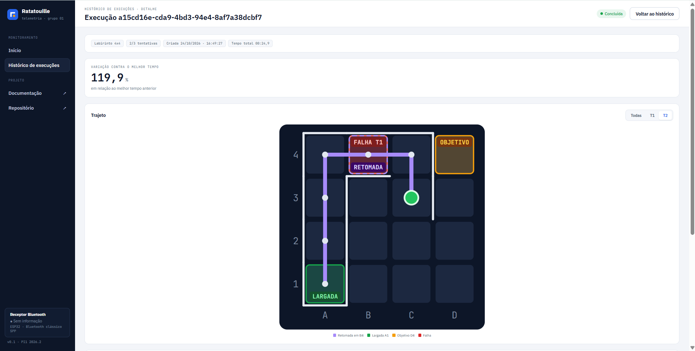
Figura 19: Tentativa 2 depois da retomada, filtro T2 (4.10)
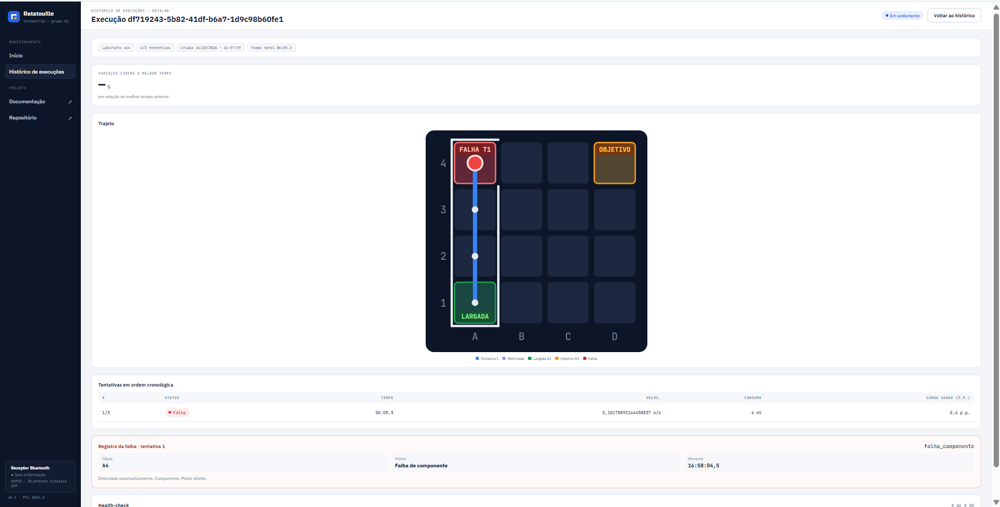
Figura 20: Falha de componente em A4 (4.10)
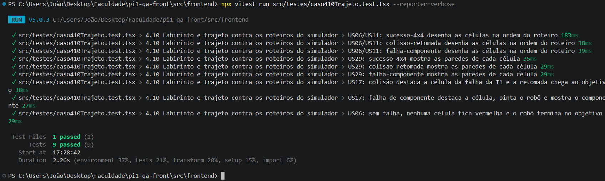
Figura 21: Teste automático do 4.10 contra os roteiros do simulador
4.11 Histórico, filtro e detalhe¶
Depois dos roteiros, o banco tinha 7 execuções 4x4: 3 concluídas e 4 canceladas (as que caíram por link_lost ou foram encerradas). A tela de histórico foi comparada linha a linha com GET /execucoes:
- Lista: mesma ordem (da mais recente para a mais antiga), mesmo status, tentativas, tempo total e velocidade média. A velocidade aparece com todas as casas que a API manda, como pede o RNF-B01 (sem arredondamento que altere o valor), e as execuções sem velocidade na API aparecem com "—" (Figura 22).
- Filtro: 4x4 e Todos mostram as 7; 8x4 e 12x4 ficam vazios, como
GET /execucoes?tipo_labirinto=8x4e12x4. - Detalhe: na execução da colisão, a tabela mostra 1/3 Falha (00:06,1, 5 mV, 0,5 p.p.) e 2/3 Sucesso (00:16,5, −2 mV, −0,2 p.p.), e a variação contra o melhor tempo é 119,9%, os mesmos valores de
GET /execucoes/{id}(Figura 23).
Os testes front06.test.tsx e rotas.test.tsx cobrem o mesmo fluxo com o MSW: lista decrescente com paginação do backend, filtro por labirinto, detalhe com as três tentativas, métricas, variação e trajeto por tentativa (Figura 24).
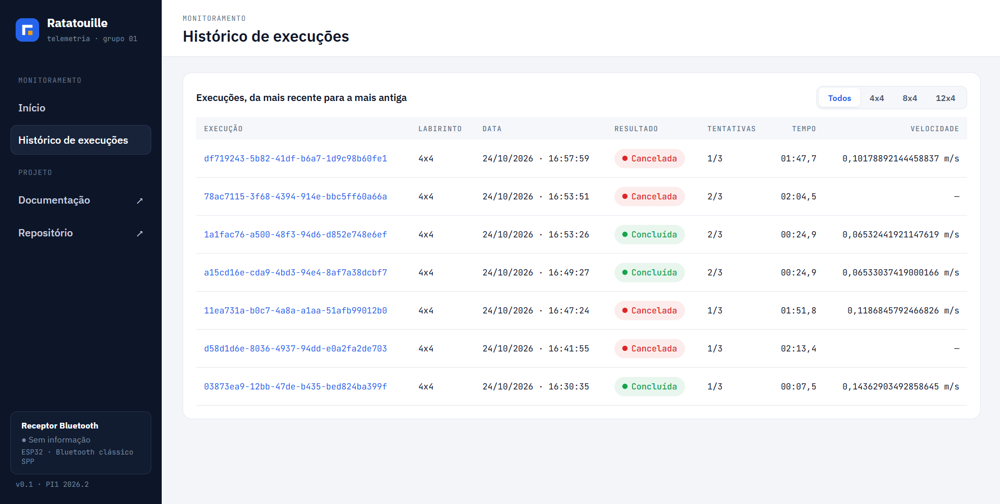
Figura 22: Histórico com as execuções gravadas no banco (4.11)
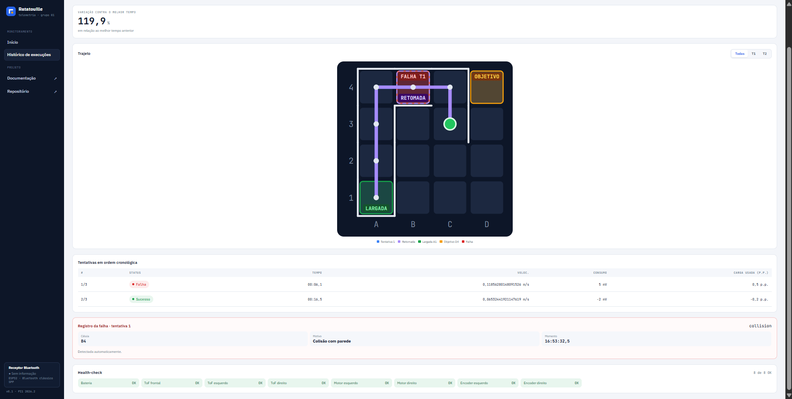
Figura 23: Detalhe com trajeto, tentativas, falha e health-check (4.11)
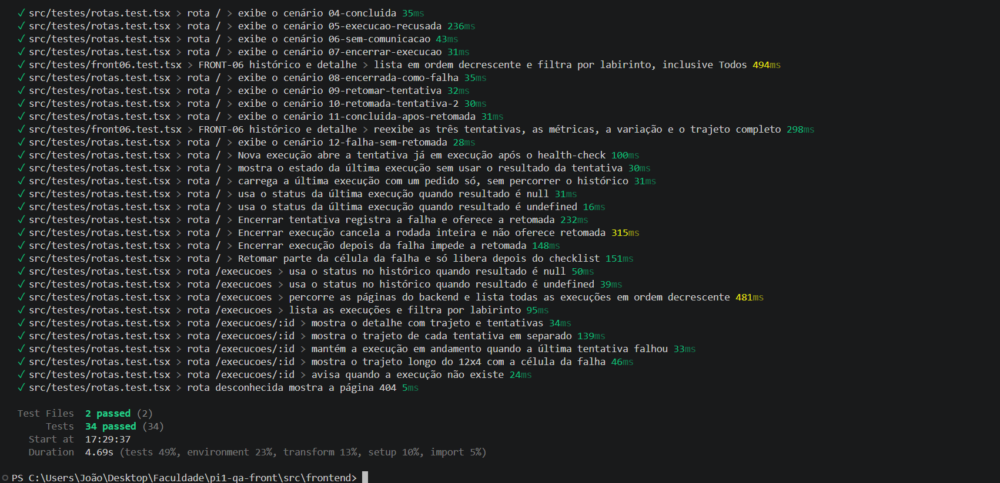
Figura 24: Testes automáticos do histórico e do detalhe (4.11)
Pontos encontrados¶
Nenhum deles reprova os casos 4.10 e 4.11, porque a tela mostra o que a API grava. Ficam registrados para correção:
- UUID no lugar do número da execução: a API não manda
numero(o campo é opcional no front e só os mocks o preenchem), então o título do detalhe e a lista mostram o UUID inteiro. Nenhum requisito pede o número, mas o UUID dificulta a leitura do histórico (#248). - Consumo negativo: a T2 da colisão tem consumo de −2 mV. O simulador volta a bateria para 7,9 V a cada boot, e a bateria inicial da tentativa vem da última leitura do boot anterior. No robô real, a LiPo também pode subir alguns mV parada, e nem a API nem o front tratam esse caso (#247).
- Simulador sem esperar o
largar: com adevatual, a tentativa aberta pela tela cai por "reinício do robô" quando chega o health-check do simulador (#249). - Objetivo dos roteiros: o
sucesso-4x4e a T2 docolisao-retomadaterminam em C3, e não no objetivo D4 do 4x4 (US39), e mesmo assim a API aceita o sucesso (#246).
Testes unitários do front-end¶
A suíte do front roda com o Vitest e o Testing Library, com o MSW no lugar da API. A cobertura é medida pelo provider v8 (npm run test:cobertura em src/frontend), com meta de 80% das linhas configurada no vite.config.ts. Ficam de fora só os arquivos que não vão para o build: os testes, os mocks do MSW, o main.tsx e os tipos gerados da API.
Resultado (26/10/2026): 230 de 230 testes aprovados e 97,2% das linhas cobertas (94,3% das instruções, 94,1% das funções e 90,4% dos desvios), acima da meta de 80%.
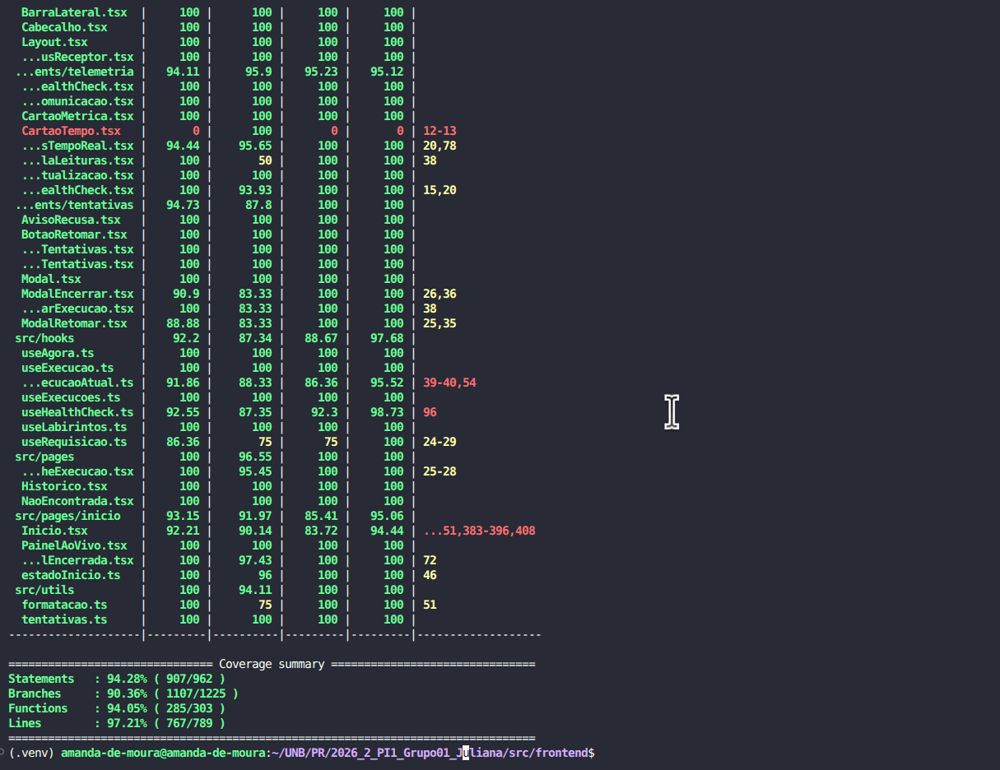
Figura 25: Cobertura do front-end por arquivo (vitest run --coverage)
Testes unitários e de integração do back-end¶
A suíte do back-end roda com o pytest em src/backend, contra o Postgres de teste, e a cobertura é medida com o pytest-cov sobre os pacotes app, ponte e contrato, com meta de 80% das linhas (--cov-fail-under=80). Os testes de integração são os que passam pela API e pelo banco (tests/integracao), como a ingestão de telemetria, as rotas de execução, o stream SSE e a ponte serial. Os unitários (tests/unit) cobrem os serviços, o repositório e a ponte isoladamente.
Resultado (26/10/2026): 467 de 467 testes aprovados e 96,79% das linhas cobertas (2.121 instruções, 68 não cobertas), acima da meta de 80%. O relatório lista só os arquivos abaixo de 100%; os outros 38 arquivos têm cobertura completa.
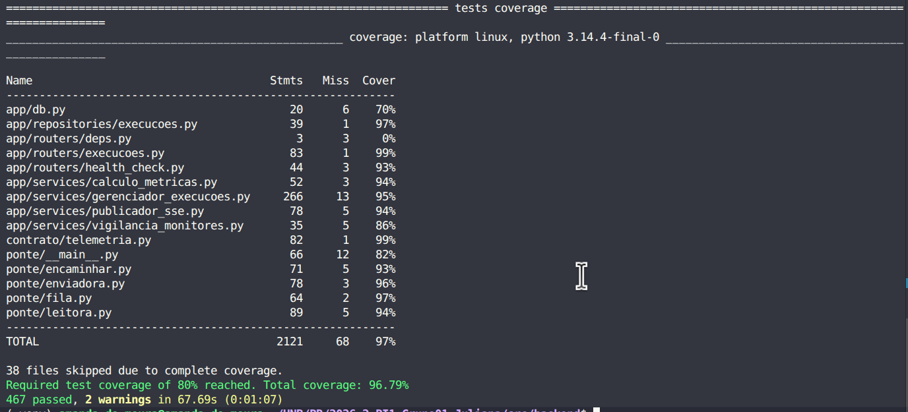
Figura 26: Cobertura do back-end e da ponte, arquivos abaixo de 100% (pytest --cov)
Testes E2E (sistema)¶
Os testes E2E rodam com o Playwright em src/frontend/e2e/us-conectado.spec.ts, pela interface gráfica, contra a cadeia real: o simulador de navegação do firmware e o simulador de telemetria mandam as mensagens por HTTP para a API (docker compose em src/backend, com Postgres), e o front roda sem mock (VITE_API_MOCK=false). Cada teste confere a tela e, em seguida, o que a API gravou. Para repetir, com a API no ar em http://127.0.0.1:8000, rode npm run test:e2e:conectado em src/frontend.
Resultado (26/10/2026): 10 de 11 testes aprovados em 2,0 min.
O roteiro abaixo guia os testes automatizados: cada caso tem um teste em us-conectado.spec.ts cujo título começa com o ID do caso. As telas são as do protótipo.
| ID | Fluxo | Histórias de usuário | Telas | Resultado esperado | Resultado |
|---|---|---|---|---|---|
| E2E-01 | Execução completa com sucesso: health-check, Nova execução e conclusão | US01, US04, US06, US08, US10, US11, US12, US14, US15, US18, US20, US25 | 1, 2, 3, 4 | A tela mostra a tentativa 1/3, o trajeto e o tempo desde a última atualização; com a tentativa aberta, o Retomar é recusado (409); ao chegar a D4, a execução fica concluída, com os dados gravados | Aprovado |
| E2E-02a | Nova execução bloqueada sem health-check válido (DIP divergente e reprovado) | US12, US21 | 2, 5 | A tela mostra o motivo e bloqueia a Nova execução; a API recusa com 409; nada é criado | Aprovado |
| E2E-02b | Nova execução com uma execução em andamento cancela a anterior | US12, US18 | — | A anterior fica cancelada e a tentativa failed; a nova abre a tentativa 1/3 em running |
Aprovado |
| E2E-03 | Encerramento manual e retomada na célula da falha | US17, US19, US22, US31 | 7, 8, 9, 10 | Tentativa 1 failed com motivo e célula; a retomada abre a tentativa 2/3 na mesma execução, com tentativa_id próprio e o trajeto preservado |
Aprovado |
| E2E-04 | Falha de componente e retomada | US30 | 8, 9, 10 | Falha registrada com o componente; a retomada abre nova tentativa e conta no limite | Reprovado |
| E2E-05 | Três falhas manuais esgotam as tentativas | US07, US22 | 12 | Depois da 3ª falha, o botão de retomar some e a execução fica cancelada |
Aprovado |
| E2E-05b | Execução cancelada não oferece retomada | US07 | 12 | Cancelada a execução, a tela não oferece o Retomar | Aprovado |
| E2E-06 | Perda de comunicação (10 s sem telemetria) | US07, US23 | 6, 8 | Tentativa failed por link_lost na última célula; a execução segue em_andamento e a tela oferece o Retomar |
Aprovado |
| E2E-07 | Estouro do limite de 10 min | US24 | — | Execução cancelada por time_exceeded |
Não realizado |
| E2E-08 | Histórico, filtro por labirinto e detalhe das três tentativas | US02, US03, US09, US13, US16, US17, US26, US27, US28 | Sem tela | Lista e filtro batem com o banco; o detalhe reexibe trajeto, tentativas e a variação contra o melhor tempo | Aprovado |
| E2E-09 | Paredes enviadas pelo robô no desenho do labirinto | US29 | 3 | A máscara gravada é a enviada e cada parede aparece no lado certo da célula | Aprovado |
| E2E-10 | Health-check pela web: 30 s sem resposta do robô | US05, US32 | 2 | O pedido sem resposta libera nova solicitação e não abre tentativa | Aprovado |
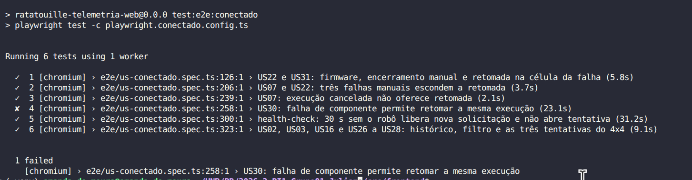
Figura 27: Execução dos testes E2E com o back-end real (npm run test:e2e:conectado), primeira rodada, com os seis testes originais
O teste da US30 reprova por causa do simulador de telemetria, não do front. Ele reproduz o roteiro falha-componente com um boot novo, e o simulador começa a correr logo depois do health-check, sem esperar o largar. Desde o PR #239, a API entende o health-check de um boot maior como reinício do robô e encerra a tentativa aberta como link_lost. Na execução, a tela mostrou "link_lost em A1" no lugar de falha_componente em A4, e o log da API registrou tel, passo e falha descartados por "nenhuma tentativa aberta". É o problema da #249, ainda aberta; a US30 fica sem E2E aprovado até ela ser resolvida.
O E2E-07 não foi realizado. Ele exigiria subir uma segunda API com o limite de tempo reduzido, e esse comportamento fica coberto no nível de integração, com relógio simulado, pelo caso 4.4. Nem esse caso nem o E2E cobrem o cancelamento aos 10 minutos entre duas tentativas, comportamento que o back-end ainda não tem (US24).